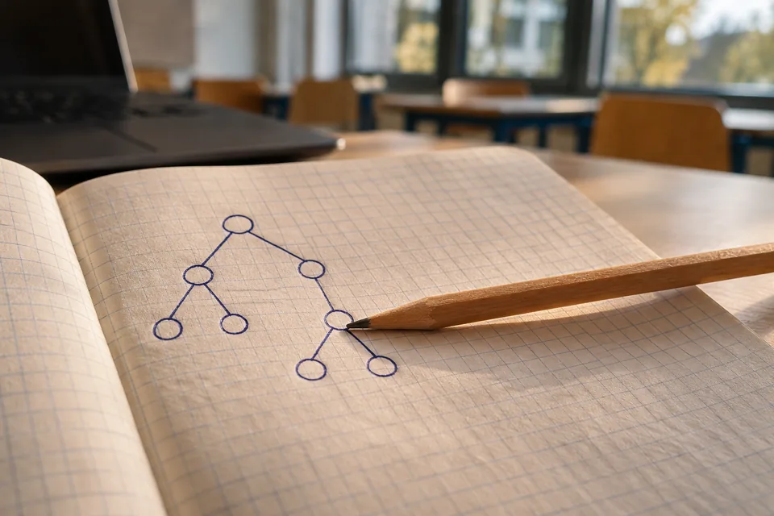

Kdo vlastně jsem?
Pocházím ze Soběslavi a studuji druhým rokem aplikovanou informatiku na Fakultě informatiky a managementu Univerzity Hradec Králové.
V roce 2025 jsem odmaturoval na SOŠ – Centru odborné přípravy v Sezimově Ústí. V oboru informační technologie jsem se zaměřil na správu sítí a programování.